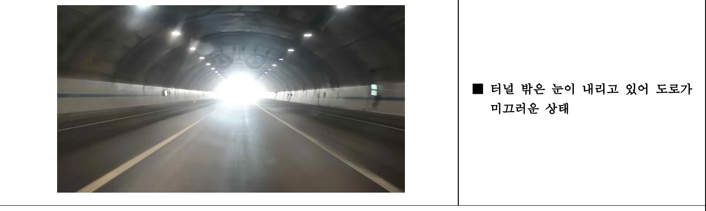

731. Hai cách lái xe nào là an toàn nhất trong tình huống sau?

- ①Vì đường trơn trượt nên chuyển sang làn đường số 3 trước khi ra khỏi đường hầm rồi lái xe giảm tốc.
- ②Vì không rõ tình hình bên ngoài đường hầm nên tăng tốc sau khi lái xe ra khỏi đường hầm.
- ③Vì là đoạn có thể chuyển làn đường trong đường hầm nên chuyển sang làn đường số 1, tăng tốc và lái xe nhanh qua.
- ④Bên ngoài đường hầm có thể trơn trượt nên lái xe giảm tốc độ.
- ⑤Cần chú ý vì khi ra khỏi đường hầm có thể bị chói mắt.
Xem đáp án
Đáp án
④ Bên ngoài đường hầm có thể trơn trượt nên lái xe giảm tốc độ.
⑤ Cần chú ý vì khi ra khỏi đường hầm có thể bị chói mắt.
Căn cứ
Khi người điều khiển tất cả các phương tiện muốn rẽ phải tại giao lộ, trước tiên họ phải rẽ phải trong khi lái xe chậm dọc theo mép đường bên phải. Trong trường hợp này, người điều khiển xe rẽ phải phải chú ý đến người đi bộ hoặc xe đạp dừng lại hoặc đi tiếp theo tín hiệu (Điều 25, Khoản 1 Luật Giao thông đường bộ). Nếu muốn rẽ phải, hãy bật đèn xi nhan 30m trước khi đến ngã tư (Phụ lục 2 Nghị định thi hành Luật Giao thông đường bộ). Cắt đầu xe đang dừng hoặc di chuyển chậm để tránh nguy hiểm là vi phạm hành vi cắt đầu (Điều 23, 22, Khoản 2, số 3 Luật Giao thông đường bộ). Nếu đột ngột từ nơi tối đi vào nơi sáng có thể gặp hiện tượng thích ứng ánh sáng, mắt cần thời gian để thích nghi với ánh sáng chói nên cần giảm tốc độ và giữ tư thế lái xe an toàn để chuẩn bị cho những tình huống bất ngờ.
Phần căn cứ là bản dịch máy để tham khảo.